가운데 셀 클릭 → 캐럿 진입(개체/셀선택 아님)
캐럿 진입 후 첫 열 우측 세로선 +25px 드래그 — 줄 전체 재분배, 표 폭 불변
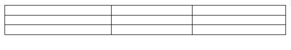
첫 행 아래 가로선 +15px 드래그 — 행 성장(한컴식, 표 높이 증가). 이번 감사에서 발견·수리된 항목
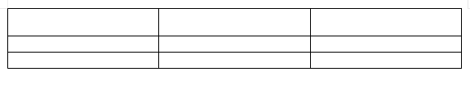
Shift+세로선 +20px — 한 칸 가로 어긋내기, 셀 9개·표 폭 불변
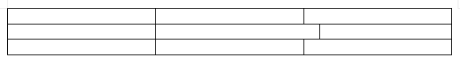
Shift+가로선 +12px — 한 칸 세로 어긋내기, 셀 9개·표 높이 불변
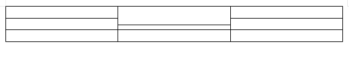
바깥 아래 테두리 가장자리 1/3 지점 +25px — 표 높이 조절
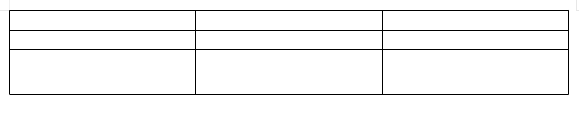
바깥 오른쪽 테두리 가장자리 +25px — 표 폭 조절
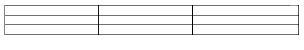
바깥 테두리 칸 가운데 클릭 — 표 개체 선택
미선택 상태 테두리 잡아끌기 한 제스처 — 표 이동
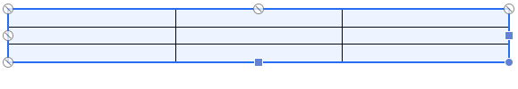
개체 선택 후 우변 중점 e핸들 +30px — 표 폭 조절
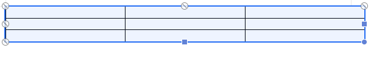
셀에서 셀로 드래그 — 다중 셀 선택(범위)
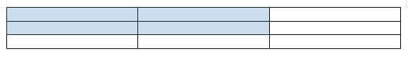
F5 — 셀 선택 모드 진입

F5 후 →↓ — 셀 이동(b2 도달)
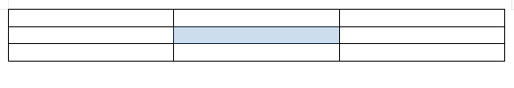
F5 후 Shift+→ ×2 — 키보드 한 칸 어긋내기
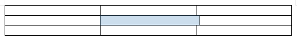
이어서 Shift+← ×2 — 원위치 복원(격자 완전 복귀)

F5 후 Shift+↓↓↑↑ — 세로 어긋·복원 왕복
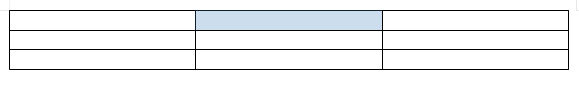
F5 후 Alt+→ ×2 — 경계선 전체 이동(표 폭 불변)
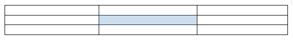
F5 F5 후 →↓ — 범위 확장(2×2)